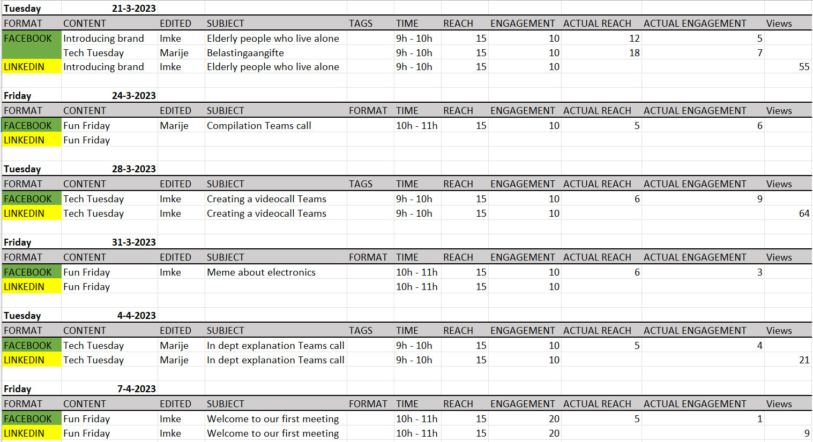

General Information
This branded website is publicly available at https://katbastin.github.io/PRJ4-ComCon/
This website was created by:
- Marije Engel (ID: 213990)
- Imke de Beer (ID: 211574)
- Ioana Giurca (ID: 211069)
- Katharina Bastin (ID: 213855)
Content
Please clarify here the match between students and pieces of content. Make sure that you provide a link to the correct page within the website
| # | Student ID | Value | Name and link of content |
|---|---|---|---|
| 1. | 000000 | Value | Content title |
| 2. | |||
| 3. | |||
| 4. |
Production
Design Elements
Please provide a list of design elements alongside their justifications:
-
A colour scheme (with HTML colour codes, which must be consistent with your final website)
— see the example below from the BUas brand book:
- #EE7622 The orange colour refers to the Dutch identity and the city of Breda (Oranjestad). Orange stands for…
- #00406B Dark blue signifies…
- Font choices
- User interface patterns (e.g. grids, carousels, menu organizations etc.)
- The structure of the navigation and content (e.g. how content units are distributed across pages)
- All these elements must be justified by referring to the theory and/or vocabulary of design
- Please relate these elements to other units, for example:
- How does website design fit the values and personality of the brand?
- How does website design fit the marketing and communication strategy?
- How does website design help showcase the unique value proposal of the product?
Credits
Please provide links and/or credits for third-party elements including:
- HTML templates if these are different from this one (buas-media-interactive/prj4-group-template)
- The source code for UX patterns other than the ones provided by the “Bootstrap” library (see getbootstrap.com/docs for a list of such patterns)
- Images that were not produced by students themselves, including when crediting is not mandatory (in other words, we ask you to credit Unsplash images)
We used the BUas template and used only Bootstratp library for more elements. A lot of elements were also created by ourselves with the help of teaching tools like W3schools.
Pictures from Unspalsh:
- https://unsplash.com/photos/HNSpyx5lbwk
- https://unsplash.com/photos/pwMds57bapI
- https://unsplash.com/photos/V2edkaIdMP4
Pictures from Pexels:
Icons from PNGEGG:
- https://www.pngegg.com/en/png-bvbbl
- https://www.pngegg.com/en/png-xmlof
- https://www.pngegg.com/nl/png-zxxuh
- https://www.pngegg.com/nl/png-bbfjt
- https://www.pngegg.com/nl/png-blesz
Their terms of use:
Testing Report
Please write about…
- Your testing goals – in other words, what you are trying to learn about your website?
- Your testing methods, which includes information about:
- The test’s participants (number, match with target audience, etc.)
- The test’s setting (which material is used, is it done remotely, on campus, at home, etc.)
- The test’s protocol (what instructions are given, how it is recorded, etc.)
- Can you talk us through the process of reading about the team of ComCon?
- Can you go to our Facebook page?
- Can you get more information about the services ComCon offers?
- Can you go to our LinkedIn page?
- Can you find our values?
The method was in-person usability testing. They used one of our laptops. We were standing next to them in case they needed guidance. We tested our website with 3 participants Mauro, Jay Jay and Sanne. They are students at Breda University of Applied Sciences as it would be complicated to test it with our target group. We informed them on our target audience and that they should keep in mind that the website is also meant for them as it is a crowdfunding website.
The test is done remotely on campus. The participants are sitting in front of the laptop. During the testing, only a laptop is used. We are filming the participants during the test and giving instructions on where we want them to go.
The testing will be recorded on video and the users will sign a consent form. Before we start, we tell them to not go on the corporate page and explain they are portraying 65+. Then, we ask them a set of Questions:
- Your testing results, which includes information about:
- Positive and negative aspects of the UI/UX that have been identified, ranked by importance.
- Improvements that have been implemented on the final website (or that would be implemented if doing so would be too complex)
During the user testing, it was mentioned a couple of times that the fonts could be made a bit bigger as elderly people aren’t able to read everything. It was also mentioned that the menu right above the page should be on the left. This is because you read from right to left naturally. However, she also mentioned that it was easy to find. Furthermore, they said that it was clear what our brand was about and how to find our socials and information about our team, the only link not working was the email.
An improvement that was implemented is making the values more clear on the home page. We fixed the link to the email. Because when you click on the link, it didn't work. The fonts could be bigger so that it is more readable for elderly people.
The user is able to navigate through the website without any help. The user is able to contact us and go to our social media. The user is able to read all content published on the website. The user is able to go through the different photo slides. The user understands what our brand is about after looking through our website.
Marketing
Context of campaign and promotional activities
Our brand is all about helping elderly people who live alone with technology. Helping them understand the services on the internet. In-class and at home.
Communication message and objectives
Communication message: “We want to create a brand that understands the situation elderly people who live alone are in. Not victimize them but understand what they want and need.”
Reach objective: Social media – minimum of 50 followers on Facebook and LinkedIn. Reach and engagement of 15 per post.
Affective objective: Seen, Understood, Respected, and Connected.
Response objective: Trust us.
We want to achieve a connection between elderly people and offer them a good time during the activities.
Target audience
Our target audience is elderly people above 65. According to the CBS (Dutch Central Bureau of Statistics), still around 73% of people aged 65+ use the internet and some social media: Facebook, WhatsApp, YouTube, LinkedIn. Facebook is the most popular social media platform among 70+ year-olds in the Netherlands, with 69% of this age group using the platform. LinkedIn is also used by our target audience in the Netherlands. According to the CBS report, 16% of this age group uses the professional networking platform (CBS, 2020).
Elderly people tend to portray loyalty once they like a brand, make it personal by addressing them directly with possible discounts, and emphasize our brand's usefulness as that is a way to charm the elderly. The rest of the percentage doesn’t even use the internet, so another way to get to them, is through old habits. Plus, seniors often trust print newspapers as a credible source of information rather than newer digital marketing methods. ‘Older users primarily use social media for diversion – passing the time when bored – and entertainment’ (University of Alabama Huntsville, 2021). They still prefer face-to-face interactions for relationship maintenance, Dr. Sheldon says. Through Facebook and LinkedIn, we want to communicate our message; “Create a brand that understands the situation elderly people who live alone are in. Not victimize them but understand what they want and need.”
Based on analysis of the previous research on the elderly's behaviour on socials the following has been noticed: The elderly like their daily routines. They usually wake up and get ready, upon which they will check their socials and emails going on the computer/phone after breakfast for example. Also, most of them only use their house connection, meaning as soon as they leave, they won't be active. In this case, morning (9 am) to lunchtime is best to post to target them.
To add, general times to post with the most active users throughout the day/week on Facebook:
- You will get the most consistent engagement on weekdays from 9 am–3 pm. The worst day is Sunday, which sees the least amount of engagement. You will find the lowest engagement during early mornings and evenings before 7 am and after 5 pm each day (Geyser, 2023).
- Overall best time to post on Facebook based on an analysis of 30,000 social media posts, Hootsuite found out that the best overall time to post on Facebook is between 8 a.m. and noon on Tuesdays and Thursdays (Christina Newberry, 2023).
Based on the previous information we will post on:
Tech Tuesday
Tuesday between 9 a.m. and 11 a.m.
Share helpful tips and advice on using technology that is simple and easy to understand, to help older people stay connected with their loved ones or do simple tasks online as a lot is shifting to online.
Fun Friday
Friday between 10 a.m. and 12 a.m.
Share fun and light-hearted content such as memes, jokes, or quizzes that older people can engage with and share with their friends and family, helping to strengthen connections and build community.
Media Tactics
Our target audience uses Facebook, WhatsApp, YouTube, and LinkedIn. For our brand, we are going to use only Facebook and LinkedIn. Using these social media platforms is the most effective way to promote our brand. Facebook has communities we could join and send messages in, to lead them to our page. It is also possible to create posts and stories. LinkedIn, we were surprised to see that elderly people use it. Although, you cannot find exactly how and why they use LinkedIn, probably just because the elderly starts working for longer nowadays and try to adapt to the new ways.
According to the Dutch Social Media Monitor 2021 by Newcom Research and Consultancy, 81% of people aged 65 to 79 who use Facebook in the Netherlands give likes to posts, while 69% share posts and 62% comment on posts. The figures are slightly lower for people aged 80 and older, with 73% giving likes, 55% sharing posts, and 45% commenting on posts.
A 2019 article by Marketingfacts, a Dutch website that provides marketing news and insights, reported that seniors in the Netherlands are more likely to share content on Facebook than other age groups. The article cited data from Newcom Research and Consultancy, which found that 43% of Facebook users aged 65 and older in the Netherlands share content on the platform, compared to 34% of users aged 40 to 64 and 24% of users aged 18 to 39.
An article on SeniorWeb reported that elderly people in the Netherlands are more likely to engage with positive posts on Facebook. The article cited research from the University of Pennsylvania, which found that older adults are more likely to share content that is uplifting and positive.
Content Planner
Learning Points
During the feedback session, it was mentioned that our content was really good. It deserved more recognition. We had good content, with a detailed explanation of certain content that we are also using for our product. For example the step for step explanation about taxes and Microsoft Teams. Unfortunately, we didn’t get a lot of reach, engagement, and followers. We didn’t reach our objective. We did join communities on Facebook, however, that is not enough. We should’ve posted in the communities to lead people to our page. We are aware that Facebook and LinkedIn are not the easiest social media platforms to gain followers. However, Instagram wasn’t an option as it couldn’t reach our target audience
As you can see in our Professionalism, time management was difficult. We posted late a lot of times and even a day later once. It would be easier to be able to plan a post, however, we don’t know If this was even possible. Next time, we should set a reminder for example.
Future Planning
As for the future, we would post more technical tips. For example, how to sign up for an event or appointment online, or how to search for information in the most effective way. We would introduce our first workshop and from there one we would share the content of our workshops. When we look at our learning points, we should post our content in the communities on Facebook to gain more followers and reach our objectives.
Professionalism
As we can not copy the link of every single post on FB, here are the two links of our socials:
Here is a link to the one drive where all the screenshots of the post can be found:
Management
Lean Canvas
Fill in at least 2 bullet points per building block and according to the rubrics.
Problem
- List your top 3 problems you solve for your target group(s).
- Describe briefly how the problems are solved now (existing alternatives).
Solution
- Outline the brand solution(s) you have for the above problem(s).
Customer segments
- List your target customers and/or users.
- Describe briefly the characteristics of your ideal customer (early adopter, brand persona).
Unique value proposition
- With a single, clear compelling message, state why your brand idea is different and worth paying attention to.
Unfair advantage
- List the aspect(s) of your brand that cannot easily be copied, also called your sustainable competitive advantage(s).
Channels
- List your main path to customers.
- How do you reach them? What channel(s) do you use.
Key metrics
- List the key numbers that tell you how your brand experience is doing.
- For example amount of users, downloads, visitors, subscriptions, sales etc. Numbers you are able to measure.
Revenue streams
- List your sources of revenue: describe the revenue model and the (different) revenue stream(s).
Cost structure
- List your main costs: define the fixed and variable costs.
- Calculate the cost per unit.
Services/products
- State what your product and/or service is and how this contributes to your unique value proposition.
- Clarify the fit between the product/service developed and the brand identity/brand image.
Validation of Assumptions
Write a reflection on the choices made in creating choosing the trademark, including an analysis of the existing alternatives.
Appendix
Please use the list below to provide links to evidence for all parts of your justication. Please double-check all links before delivering the website. Do not hesitate to refer to these numbers above.